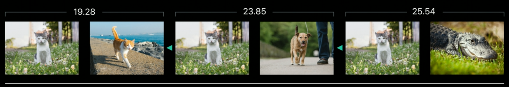
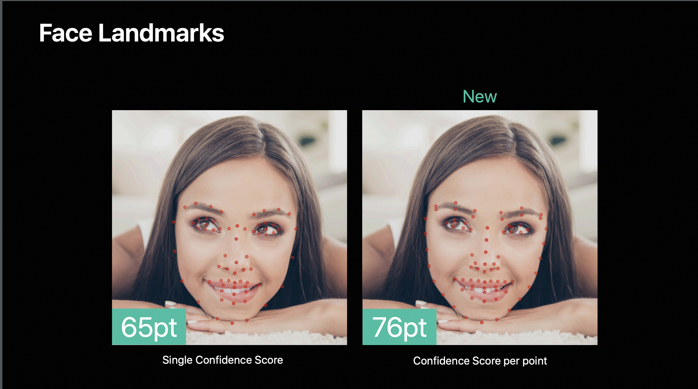
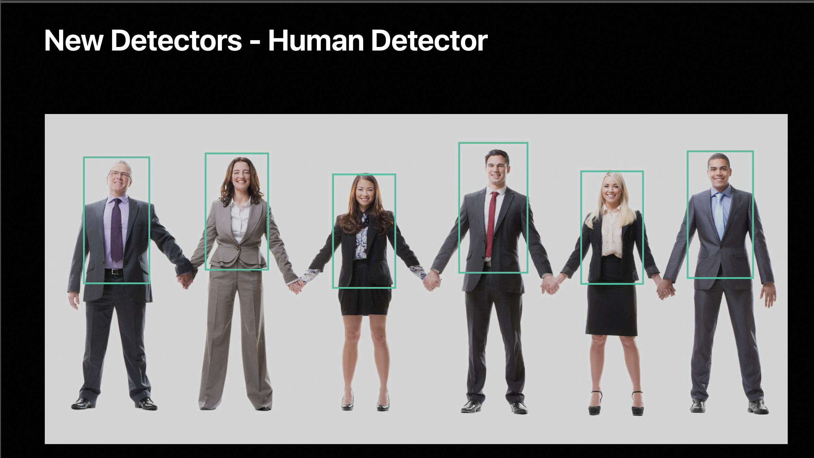
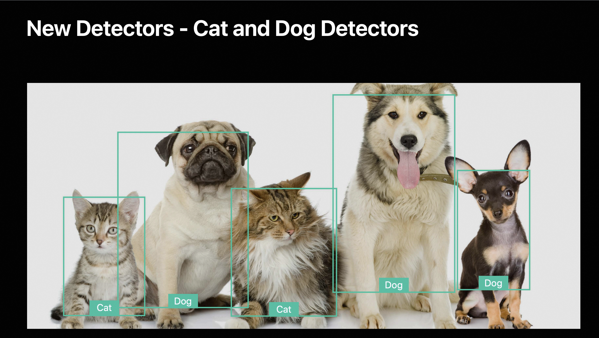
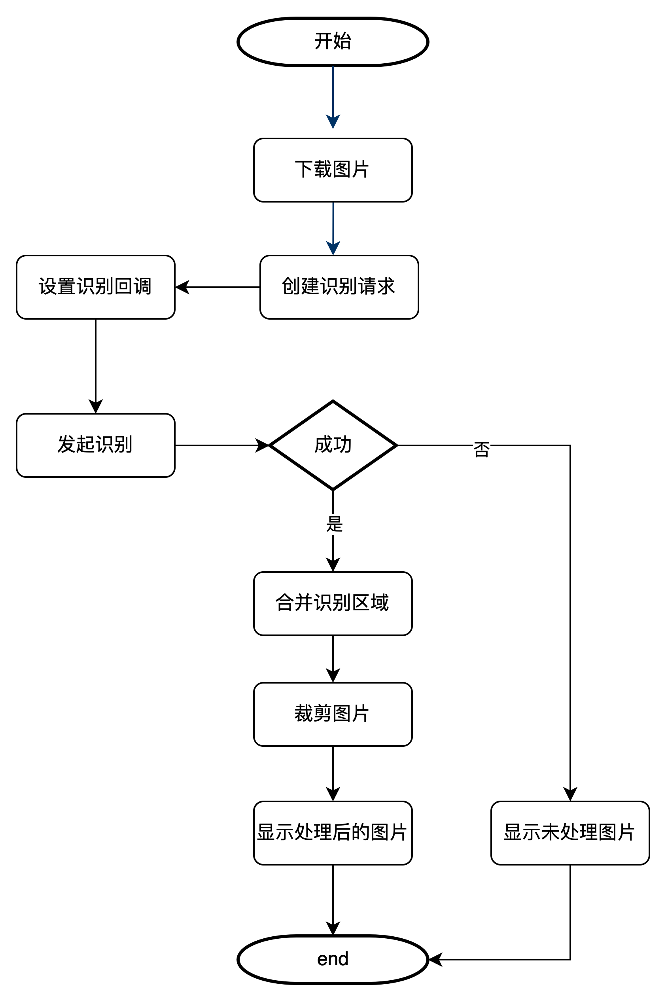
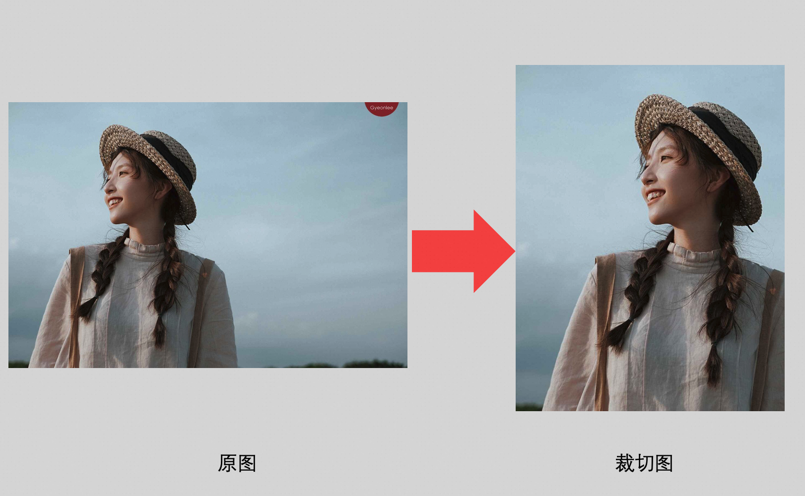
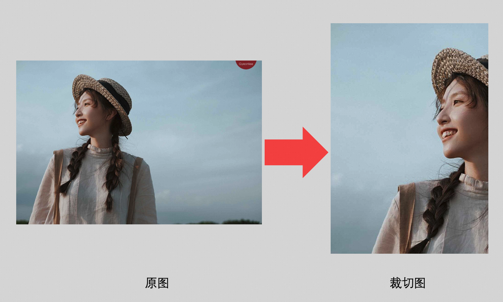
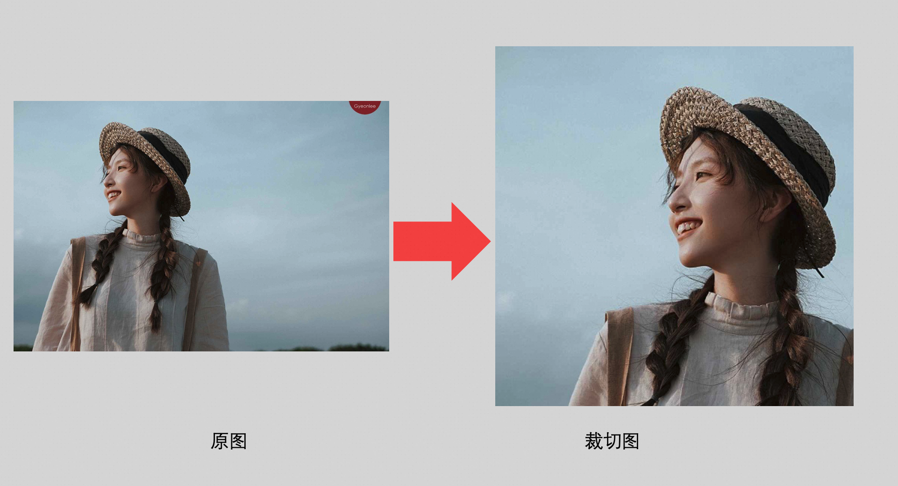

Vision突出展示人像方案调研
引言
Vision Framework
概述
Vision Framework是苹果在iOS 11中首次推出用于图像分析和计算机视觉任务的框架。它为开发者提供了在应用中轻松实现各种图像处理功能，如人脸检测、文本识别、物体识别、图像分类、条码扫描等。
应用场景
图片相似度对比
每张图片都有一个 FeaturePrint。它类似于词向量，数值越小，图像越相似。

矩形检测

二维码&条行码检测

对象跟踪

文字识别

人脸检测
支持检测笑脸、侧脸、局部遮挡脸部、戴眼镜和帽子等场景，可以标记出人脸的矩形区域

人脸特征点
可以标记出人脸和眼睛、眉毛、鼻子、嘴、牙齿的轮廓，以及人脸的中轴线

物体识别
人体

猫和狗

性能对比
Vision 与 iOS 上其他几种带人脸检测功能框架的对比：

使用
Vision使用中的角色有： Request，RequestHandler，results和results中的Observation数组。
Request类型： 有很多种，比如图中列出的 人脸识别、特征识别、文本识别、二维码识别等。
流程图

结构图

图片重要区域使用示例
1
2
3
4
5
6
7
8
9
10
11
12
13
14
15
16
17
18
19
20
21
22
23
24
25
26
27
28
29
30
31
32
33
34
35
36
37
38
39
40
41
| // 创建处理requestHandler
VNImageRequestHandler *handler = [[VNImageRequestHandler alloc] initWithCGImage:image.CGImage options:@{}];
// 创建重点区域识别请求
VNGenerateAttentionBasedSaliencyImageRequest *request = [[VNGenerateAttentionBasedSaliencyImageRequest alloc] initWithCompletionHandler:^(VNRequest * _Nonnull request, NSError * _Nullable error) {
// 处理识别回调
if (error) {
NSLog(@"Error detecting rectangles: %@", error);
completion(nil);
return;
}
// 进行图片位置转换与合并
CGRect boundingBox = CGRectZero;
for (VNSaliencyImageObservation *observation in request.results) {
if (![observation isKindOfClass:[VNSaliencyImageObservation class]]) continue;
for (VNRectangleObservation *obs in observation.salientObjects) {
boundingBox = CGRectUnion(boundingBox, obs.boundingBox);
}
}
if (CGRectEqualToRect(CGRectZero, boundingBox)) {
completion(nil);
return;
}
// 裁剪图片
CGSize imageSize = CGSizeMake(CGImageGetWidth(image.CGImage), CGImageGetHeight(image.CGImage));
CGRect bodyBoundingBox = VNImageRectForNormalizedRect(boundingBox, imageSize.width, imageSize.height);
CGImageRef croppedImageRef = CGImageCreateWithImageInRect(image.CGImage, bodyBoundingBox);
UIImage *faceImage = [UIImage imageWithCGImage:croppedImageRef];
CGImageRelease(croppedImageRef);
completion(faceImage);
}];
NSError *error = nil;
// 发送识别请求
[handler performRequests:@[request] error:&error];
// 处理错误
if (error) {
NSLog(@"Error performing request: %@", error);
completion(nil);
}
|
效果
图片重点

人脸

人体

总结
苹果Vision Framework提供了多种识别器，图片重点区域识别应用场景不限局限于人，如果要突出图片重点，可以采用这个识别器。
人体检测，可以识别出人体，满足突出人物显示需求。
人脸识别，识别区域为人脸，裁剪后会把脸部重点突出，效果不太好。
性能方面，由于需要在图片下载完成之后进行图片的实时识别和裁剪，会存在一定的性能损耗。